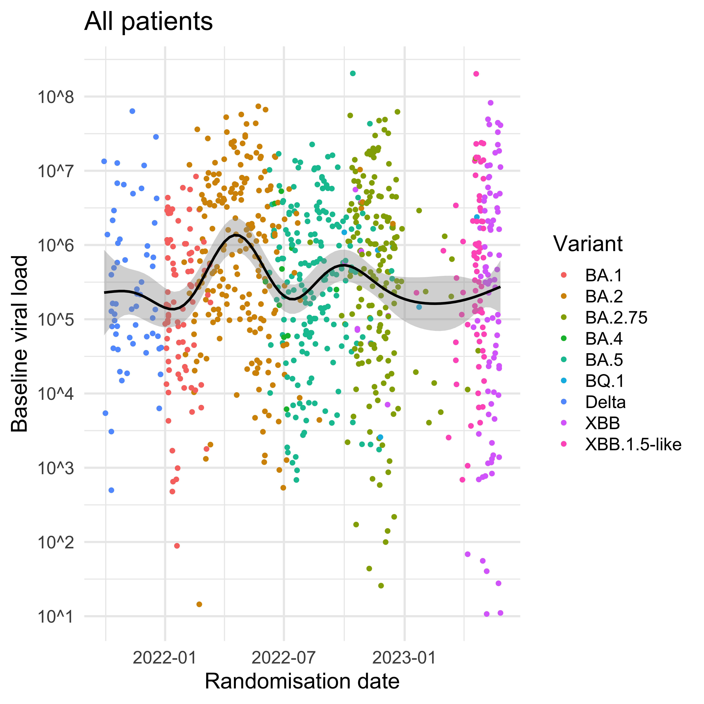
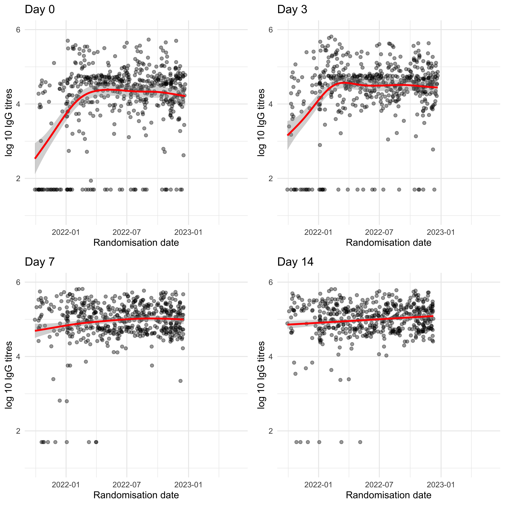
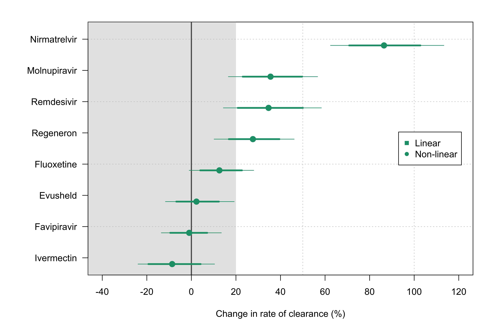
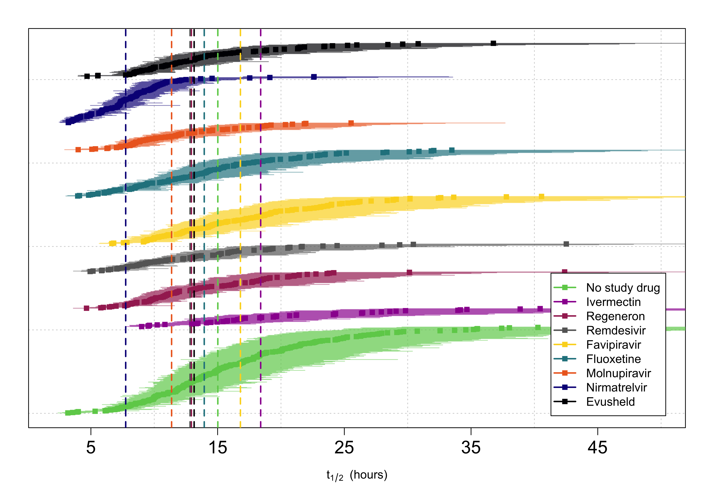
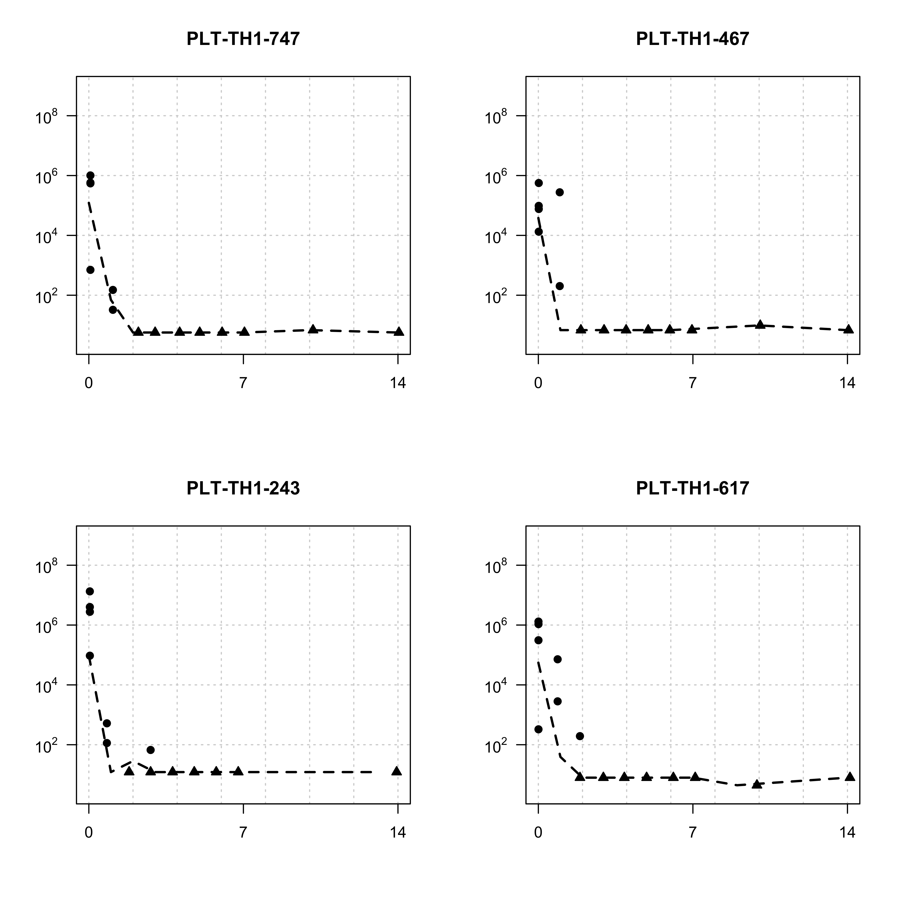

knitr::opts_chunk$set(cache = F, cache.comments = FALSE,
echo = F, include = TRUE,
fig.width = 8, fig.height = 8,
fig.pos = 'H',dev = 'png', dpi = 300)Determinants of viral clearance in PLATCOV
Loading required package: StanHeadersLoading required package: ggplot2rstan (Version 2.21.7, GitRev: 2e1f913d3ca3)For execution on a local, multicore CPU with excess RAM we recommend calling
options(mc.cores = parallel::detectCores()).
To avoid recompilation of unchanged Stan programs, we recommend calling
rstan_options(auto_write = TRUE)── Attaching packages ─────────────────────────────────────── tidyverse 1.3.2 ──
✔ tibble 3.2.1 ✔ dplyr 1.1.2
✔ tidyr 1.2.1 ✔ stringr 1.5.0
✔ readr 2.1.3 ✔ forcats 0.5.2
✔ purrr 0.3.5
── Conflicts ────────────────────────────────────────── tidyverse_conflicts() ──
✖ tidyr::extract() masks rstan::extract()
✖ dplyr::filter() masks stats::filter()
✖ dplyr::lag() masks stats::lag()
Attaching package: 'kableExtra'
The following object is masked from 'package:dplyr':
group_rows
Loading required package: timechange
Attaching package: 'lubridate'
The following objects are masked from 'package:base':
date, intersect, setdiff, union
Loading required package: Matrix
Attaching package: 'Matrix'
The following objects are masked from 'package:tidyr':
expand, pack, unpack
Loading required package: ggpubr
Attaching package: 'survminer'
The following object is masked from 'package:survival':
myeloma
Attaching package: 'gridExtra'
The following object is masked from 'package:dplyr':
combine _
platform aarch64-apple-darwin20
arch aarch64
os darwin20
system aarch64, darwin20
status
major 4
minor 2.2
year 2022
month 10
day 31
svn rev 83211
language R
version.string R version 4.2.2 (2022-10-31)
nickname Innocent and Trusting R version 4.2.2 (2022-10-31)
Platform: aarch64-apple-darwin20 (64-bit)
Running under: macOS Ventura 13.2.1
Matrix products: default
BLAS: /Library/Frameworks/R.framework/Versions/4.2-arm64/Resources/lib/libRblas.0.dylib
LAPACK: /Library/Frameworks/R.framework/Versions/4.2-arm64/Resources/lib/libRlapack.dylib
locale:
[1] en_US.UTF-8/en_US.UTF-8/en_US.UTF-8/C/en_US.UTF-8/en_US.UTF-8
attached base packages:
[1] stats graphics grDevices utils datasets methods base
other attached packages:
[1] gridExtra_2.3 survminer_0.4.9 ggpubr_0.5.0
[4] survival_3.4-0 lme4_1.1-31 Matrix_1.5-1
[7] lubridate_1.9.0 timechange_0.1.1 RColorBrewer_1.1-3
[10] finalfit_1.0.6 kableExtra_1.3.4 forcats_0.5.2
[13] stringr_1.5.0 dplyr_1.1.2 purrr_0.3.5
[16] readr_2.1.3 tidyr_1.2.1 tibble_3.2.1
[19] tidyverse_1.3.2 rstan_2.21.7 ggplot2_3.4.0
[22] StanHeaders_2.21.0-7
loaded via a namespace (and not attached):
[1] nlme_3.1-160 matrixStats_0.63.0 fs_1.5.2
[4] webshot_0.5.4 httr_1.4.4 tools_4.2.2
[7] backports_1.4.1 utf8_1.2.3 R6_2.5.1
[10] DBI_1.1.3 colorspace_2.0-3 withr_2.5.0
[13] tidyselect_1.2.0 prettyunits_1.1.1 processx_3.8.0
[16] compiler_4.2.2 cli_3.6.1 rvest_1.0.3
[19] mice_3.15.0 xml2_1.3.3 scales_1.2.1
[22] survMisc_0.5.6 callr_3.7.3 systemfonts_1.0.4
[25] digest_0.6.31 minqa_1.2.5 rmarkdown_2.19
[28] svglite_2.1.1 pkgconfig_2.0.3 htmltools_0.5.4
[31] dbplyr_2.2.1 fastmap_1.1.0 htmlwidgets_1.6.0
[34] rlang_1.1.0 readxl_1.4.1 rstudioapi_0.14
[37] generics_0.1.3 zoo_1.8-11 jsonlite_1.8.4
[40] car_3.1-1 googlesheets4_1.0.1 inline_0.3.19
[43] magrittr_2.0.3 loo_2.5.1 Rcpp_1.0.10
[46] munsell_0.5.0 fansi_1.0.4 abind_1.4-5
[49] lifecycle_1.0.3 stringi_1.7.8 yaml_2.3.6
[52] carData_3.0-5 MASS_7.3-58.1 pkgbuild_1.4.0
[55] grid_4.2.2 parallel_4.2.2 crayon_1.5.2
[58] lattice_0.20-45 haven_2.5.1 splines_4.2.2
[61] hms_1.1.2 knitr_1.41 ps_1.7.2
[64] pillar_1.9.0 boot_1.3-28 ggsignif_0.6.4
[67] codetools_0.2-18 stats4_4.2.2 reprex_2.0.2
[70] glue_1.6.2 evaluate_0.19 data.table_1.14.6
[73] RcppParallel_5.1.5 modelr_0.1.10 nloptr_2.0.3
[76] vctrs_0.6.2 tzdb_0.3.0 cellranger_1.1.0
[79] gtable_0.3.1 km.ci_0.5-6 assertthat_0.2.1
[82] xfun_0.35 xtable_1.8-4 broom_1.0.2
[85] rstatix_0.7.1 googledrive_2.0.0 viridisLite_0.4.1
[88] gargle_1.2.1 KMsurv_0.1-5 ellipsis_0.3.2 Warning in checkStrict(plot_serial_data): global variables used: daily_VL, ID,
log10_viral_load, Time, Timepoint_ID, Trt, trt_colorWarning in checkStrict(calculate_fever_clearance): global variables used: ID,
TimeLoad data
Set up analysis
[1] "BR3"
[1] "LA08"
[1] "PK01"
[1] "TH1"Missing patients in Ivermectin arm:
character(0)
Missing patients in Regeneron arm:
character(0)
Missing patients in Remdesivir arm:
character(0)
Missing patients in No study drug arm:
[1] "PLT-BR3-031" "PLT-BR3-092" "PLT-BR3-094" "PLT-BR3-096" "PLT-LA08-007"
[6] "PLT-LA08-008" "PLT-LA08-010" "PLT-PK01-001" "PLT-PK01-002" "PLT-PK01-006"
[11] "PLT-PK01-007" "PLT-TH1-056" "PLT-TH1-845" "PLT-TH1-846" "PLT-TH1-851"
[16] "PLT-TH1-857" "PLT-TH1-859" "PLT-TH1-865" "PLT-TH1-866" "PLT-TH1-870"
[21] "PLT-TH1-875" "PLT-TH1-880" "PLT-TH1-883" "PLT-TH1-889" "PLT-TH1-890"
[26] "PLT-TH1-892" "PLT-TH1-908" "PLT-TH1-911" "PLT-TH1-915" "PLT-TH1-924"
[31] "PLT-TH1-934" "PLT-TH1-936" "PLT-TH1-937" "PLT-TH1-943"
Missing patients in Favipiravir arm:
[1] "PLT-BR3-037" "PLT-BR3-058"
Missing patients in Fluoxetine arm:
[1] "PLT-BR3-048" "PLT-BR3-088" "PLT-BR3-093" "PLT-BR3-095" "PLT-LA08-003"
[6] "PLT-PK01-003" "PLT-PK01-008"
Missing patients in Molnupiravir arm:
[1] "PLT-LA08-002"
Missing patients in Nirmatrelvir arm:
character(0)
Missing patients in Evusheld arm:
[1] "PLT-TH1-868" "PLT-TH1-871" "PLT-TH1-876" "PLT-TH1-884" "PLT-TH1-893"
[6] "PLT-TH1-895" "PLT-TH1-900" "PLT-TH1-904" "PLT-TH1-905" "PLT-TH1-907"
[11] "PLT-TH1-910" "PLT-TH1-912" "PLT-TH1-914" "PLT-TH1-927" "PLT-TH1-928"
[16] "PLT-TH1-944"Make modified intention to treat population
mITT population
Intervention FALSE TRUE
Evusheld 0 80
Favipiravir 0 114
Fluoxetine 2 111
Ivermectin 2 44
Molnupiravir 0 65
Nirmatrelvir 0 101
No study drug 5 203
Regeneron 0 88
Remdesivir 0 67Baseline characteristics
The following `from` values were not present in `x`: Nitazoxanide, Nirmatrelvir + Ritonavir, Ensitrelvir| Dependent: Trt | No study drug | Ivermectin | Regeneron | Remdesivir | Favipiravir | Fluoxetine | Molnupiravir | Nirmatrelvir | Evusheld | |
|---|---|---|---|---|---|---|---|---|---|---|
| Site | br003 | 22 (10.8) | 0 (0.0) | 0 (0.0) | 9 (13.4) | 16 (14.0) | 10 (9.0) | 0 (0.0) | 0 (0.0) | 7 (8.8) |
| th001 | 176 (86.7) | 40 (90.9) | 84 (95.5) | 54 (80.6) | 96 (84.2) | 101 (91.0) | 65 (100.0) | 101 (100.0) | 73 (91.2) | |
| th057 | 3 (1.5) | 2 (4.5) | 1 (1.1) | 2 (3.0) | 2 (1.8) | 0 (0.0) | 0 (0.0) | 0 (0.0) | 0 (0.0) | |
| th058 | 2 (1.0) | 2 (4.5) | 3 (3.4) | 2 (3.0) | 0 (0.0) | 0 (0.0) | 0 (0.0) | 0 (0.0) | 0 (0.0) | |
| Age | Mean (SD) | 30.3 (7.7) | 30.0 (7.0) | 27.9 (7.3) | 30.1 (8.2) | 30.2 (7.5) | 29.2 (7.7) | 31.4 (7.4) | 29.6 (7.3) | 30.2 (7.9) |
| BMI | Mean (SD) | 23.1 (4.1) | 22.3 (3.2) | 22.1 (3.1) | 22.7 (3.1) | 23.1 (3.7) | 22.1 (3.4) | 23.1 (4.0) | 22.7 (3.7) | 22.3 (3.6) |
| Weight | Mean (SD) | 62.5 (13.7) | 61.6 (12.3) | 60.4 (12.3) | 63.9 (11.0) | 63.0 (13.6) | 59.2 (11.2) | 63.4 (14.7) | 62.0 (12.1) | 60.6 (11.8) |
| Baseline.viral.load | Mean (SD) | 5.4 (1.3) | 5.6 (1.2) | 5.6 (1.0) | 5.5 (1.1) | 5.5 (1.0) | 5.6 (1.3) | 5.6 (1.2) | 5.4 (1.2) | 5.4 (1.3) |
| Sex | Female | 136 (67.0) | 24 (54.5) | 55 (62.5) | 35 (52.2) | 71 (62.3) | 78 (70.3) | 37 (56.9) | 65 (64.4) | 51 (63.8) |
| Male | 67 (33.0) | 20 (45.5) | 33 (37.5) | 32 (47.8) | 43 (37.7) | 33 (29.7) | 28 (43.1) | 36 (35.6) | 29 (36.2) | |
| Fever_Baseline | 0 | 158 (77.8) | 31 (70.5) | 66 (75.0) | 48 (71.6) | 88 (77.2) | 80 (72.1) | 52 (80.0) | 66 (65.3) | 60 (75.0) |
| 1 | 43 (21.2) | 13 (29.5) | 22 (25.0) | 19 (28.4) | 26 (22.8) | 31 (27.9) | 12 (18.5) | 33 (32.7) | 20 (25.0) | |
| (Missing) | 2 (1.0) | 0 (0.0) | 0 (0.0) | 0 (0.0) | 0 (0.0) | 0 (0.0) | 1 (1.5) | 2 (2.0) | 0 (0.0) | |
| Variant | BA.1 | 13 (6.4) | 14 (31.8) | 15 (17.0) | 20 (29.9) | 21 (18.4) | 0 (0.0) | 0 (0.0) | 0 (0.0) | 0 (0.0) |
| BA.2 | 52 (25.6) | 18 (40.9) | 30 (34.1) | 37 (55.2) | 42 (36.8) | 25 (22.5) | 5 (7.7) | 1 (1.0) | 1 (1.2) | |
| BA.2.75 | 42 (20.7) | 0 (0.0) | 5 (5.7) | 0 (0.0) | 5 (4.4) | 34 (30.6) | 27 (41.5) | 29 (28.7) | 30 (37.5) | |
| BA.4 | 2 (1.0) | 0 (0.0) | 0 (0.0) | 0 (0.0) | 3 (2.6) | 0 (0.0) | 2 (3.1) | 3 (3.0) | 0 (0.0) | |
| BA.5 | 41 (20.2) | 0 (0.0) | 25 (28.4) | 0 (0.0) | 32 (28.1) | 29 (26.1) | 28 (43.1) | 25 (24.8) | 9 (11.2) | |
| BQ.1 | 1 (0.5) | 0 (0.0) | 0 (0.0) | 0 (0.0) | 0 (0.0) | 2 (1.8) | 0 (0.0) | 1 (1.0) | 1 (1.2) | |
| Delta | 10 (4.9) | 12 (27.3) | 13 (14.8) | 10 (14.9) | 11 (9.6) | 0 (0.0) | 0 (0.0) | 0 (0.0) | 0 (0.0) | |
| XBB | 24 (11.8) | 0 (0.0) | 0 (0.0) | 0 (0.0) | 0 (0.0) | 8 (7.2) | 3 (4.6) | 25 (24.8) | 16 (20.0) | |
| XBB.1.5-like | 18 (8.9) | 0 (0.0) | 0 (0.0) | 0 (0.0) | 0 (0.0) | 13 (11.7) | 0 (0.0) | 17 (16.8) | 23 (28.8) | |
| Symptom_onset | Mean (SD) | 2.1 (0.8) | 2.3 (0.8) | 2.2 (0.8) | 2.4 (0.8) | 2.1 (0.7) | 2.1 (0.8) | 2.1 (0.6) | 1.9 (0.7) | 2.0 (0.8) |
| Vaccinated | No | 1 (0.5) | 1 (2.3) | 3 (3.4) | 3 (4.5) | 2 (1.8) | 0 (0.0) | 1 (1.5) | 3 (3.0) | 1 (1.2) |
| Yes | 202 (99.5) | 43 (97.7) | 85 (96.6) | 64 (95.5) | 112 (98.2) | 111 (100.0) | 64 (98.5) | 98 (97.0) | 79 (98.8) |
Some simple models for the baseline viral load. Which covariates best predict a high baseline viral load?

Call:
lm(formula = Baseline.viral.load ~ BMI + Age + Sex + Symptom_onset +
Vaccinated + Variant + Site + Fever_Baseline, data = Baseline_data)
Residuals:
Min 1Q Median 3Q Max
-4.5736 -0.6533 0.0863 0.7843 3.0897
Coefficients:
Estimate Std. Error t value Pr(>|t|)
(Intercept) 5.4633652 0.4785384 11.417 < 2e-16 ***
BMI -0.0141376 0.0112350 -1.258 0.208609
Age 0.0007685 0.0052244 0.147 0.883086
SexMale 0.1499854 0.0811984 1.847 0.065070 .
Symptom_onset -0.3068105 0.0536675 -5.717 1.50e-08 ***
VaccinatedYes 0.0284247 0.3112867 0.091 0.927265
VariantBA.2 0.5137636 0.1532080 3.353 0.000833 ***
VariantBA.2.75 0.1591086 0.1589429 1.001 0.317089
VariantBA.4 0.0410230 0.3795908 0.108 0.913964
VariantBA.5 0.0631895 0.1576038 0.401 0.688565
VariantBQ.1 -0.1278835 0.5213369 -0.245 0.806283
VariantDelta -0.1197690 0.1985635 -0.603 0.546550
VariantXBB -0.3214536 0.1878431 -1.711 0.087390 .
VariantXBB.1.5-like 0.0162988 0.1910534 0.085 0.932035
Siteth001 0.6899945 0.1530139 4.509 7.41e-06 ***
Siteth057 0.5097981 0.3972972 1.283 0.199781
Siteth058 -0.3972052 0.4167582 -0.953 0.340817
Fever_Baseline 0.5471707 0.0909002 6.019 2.59e-09 ***
---
Signif. codes: 0 '***' 0.001 '**' 0.01 '*' 0.05 '.' 0.1 ' ' 1
Residual standard error: 1.122 on 857 degrees of freedom
(7 observations deleted due to missingness)
Multiple R-squared: 0.1687, Adjusted R-squared: 0.1523
F-statistic: 10.23 on 17 and 857 DF, p-value: < 2.2e-16All VL data
`geom_smooth()` using method = 'gam' and formula = 'y ~ s(x, bs = "cs")'
left versus right tonsil in the baseline samples
Left Right
1596 1596
Left_tonsil_1 Left_tonsil_2 Right_tonsil_1 Right_tonsil_2
798 798 798 798 [1] 0.6718346[1] 0.6330749[1] 0.8571053[1] 0.9075873[1] 0.6702583[1] 0.5527354[1] 0.5912106[1] 0.6631594[1] 0.6697539Add serology
Add serology at days 0, 3, 7, 14.
Does baseline viral load correlate with baseline IgG?
Rows: 2576 Columns: 3
── Column specification ────────────────────────────────────────────────────────
Delimiter: ","
chr (1): ID
dbl (2): Day, log10_IgG
ℹ Use `spec()` to retrieve the full column specification for this data.
ℹ Specify the column types or set `show_col_types = FALSE` to quiet this message.Warning: Removed 178 rows containing non-finite values (`stat_smooth()`).Warning: Removed 178 rows containing missing values (`geom_point()`).Warning: Removed 184 rows containing non-finite values (`stat_smooth()`).Warning: Removed 184 rows containing missing values (`geom_point()`).Warning: Removed 188 rows containing non-finite values (`stat_smooth()`).Warning: Removed 188 rows containing missing values (`geom_point()`).Warning: Removed 211 rows containing non-finite values (`stat_smooth()`).Warning: Removed 211 rows containing missing values (`geom_point()`).
Fit models
Naive model (individual fits)
Cannot do PLT-TH1-018
Cannot do PLT-TH1-020
Cannot do PLT-TH1-051
Cannot do PLT-TH1-105
Cannot do PLT-TH57-007
Cannot do PLT-TH1-128
Cannot do PLT-TH1-154
Cannot do PLT-BR3-026
Cannot do PLT-BR3-027
Cannot do PLT-TH1-341
Cannot do PLT-TH1-350
Cannot do PLT-TH1-388
Cannot do PLT-TH1-391
Cannot do PLT-TH1-467
Cannot do PLT-TH1-511
Cannot do PLT-TH1-566
Cannot do PLT-TH1-584
Cannot do PLT-TH1-588
Cannot do PLT-TH1-593
Cannot do PLT-BR3-076
Cannot do PLT-TH1-606
Cannot do PLT-TH1-628
Cannot do PLT-TH1-637
Cannot do PLT-TH1-672
Cannot do PLT-TH1-720
Cannot do PLT-TH1-747
Cannot do PLT-TH1-751
Cannot do PLT-TH1-777
Cannot do PLT-TH1-808
Cannot do PLT-TH1-820
Cannot do PLT-TH1-838Boxplots by treatment
Call:
lm(formula = daily_VL ~ Trt + Study_time, data = xx)
Residuals:
Min 1Q Median 3Q Max
-2.7423 -1.0279 -0.0684 1.0391 4.1708
Coefficients:
Estimate Std. Error t value Pr(>|t|)
(Intercept) 3.28910 0.09935 33.105 < 2e-16 ***
TrtIvermectin 0.34315 0.24881 1.379 0.168196
TrtRegeneron -0.52068 0.18816 -2.767 0.005775 **
TrtRemdesivir -0.83978 0.21365 -3.931 9.16e-05 ***
TrtFavipiravir -0.01313 0.17301 -0.076 0.939521
TrtFluoxetine -0.14643 0.16793 -0.872 0.383465
TrtMolnupiravir -0.75345 0.20566 -3.664 0.000264 ***
TrtNirmatrelvir -1.37130 0.17993 -7.621 6.63e-14 ***
TrtEvusheld -0.09527 0.19770 -0.482 0.630003
Study_time -0.25635 0.06642 -3.860 0.000122 ***
---
Signif. codes: 0 '***' 0.001 '**' 0.01 '*' 0.05 '.' 0.1 ' ' 1
Residual standard error: 1.416 on 860 degrees of freedom
Multiple R-squared: 0.1465, Adjusted R-squared: 0.1376
F-statistic: 16.41 on 9 and 860 DF, p-value: < 2.2e-16Full stan model
0% 25% 50% 75% 100%
14 18 18 18 22 Full analysis dataset contains 873 patients and 15668 datapoints (13052 above LLOD, 83%)There are a total of 873 patients in the database with a total of 15668 PCRs analysable
16.7% of samples are below LOD
check stan data formatting:We are running all models with 4 chains and 2000 samples for each chain, discarding 1000 for burn-in and thining every 4, thus giving a total of 1000 posterior samples per model.main model selection

Analysis of outcomes
We define two outcomes under the model:
- Peak viral load under the non-linear model
- Rate of viral clearance under the non-linear model

In No study drug the median clearance half life was 15 (range 3.2 to 40.7)
In Ivermectin the median clearance half life was 18.4 (range 9.1 to 39.8)
In Regeneron the median clearance half life was 13 (range 4.7 to 41.9)
In Remdesivir the median clearance half life was 12.8 (range 4.9 to 43.3)
In Favipiravir the median clearance half life was 16.8 (range 6.6 to 40.7)
In Fluoxetine the median clearance half life was 14 (range 4 to 33.9)
In Molnupiravir the median clearance half life was 11.5 (range 4 to 25.6)
In Nirmatrelvir the median clearance half life was 7.7 (range 3.2 to 22.9)
In Evusheld the median clearance half life was 13.1 (range 4.7 to 37.2)predictors of slope
Call:
lm(formula = slope_median ~ Sex + Time_since_last_dose + Study_time,
data = slope_out)
Residuals:
Min 1Q Median 3Q Max
-1.48324 -0.14244 0.06347 0.21493 0.55004
Coefficients:
Estimate Std. Error t value Pr(>|t|)
(Intercept) -5.938e-01 2.355e-02 -25.210 < 2e-16 ***
SexMale 2.020e-02 2.272e-02 0.889 0.3741
Time_since_last_dose -1.820e-04 9.953e-05 -1.828 0.0678 .
Study_time -8.949e-02 1.437e-02 -6.230 7.31e-10 ***
---
Signif. codes: 0 '***' 0.001 '**' 0.01 '*' 0.05 '.' 0.1 ' ' 1
Residual standard error: 0.32 on 860 degrees of freedom
(9 observations deleted due to missingness)
Multiple R-squared: 0.1046, Adjusted R-squared: 0.1015
F-statistic: 33.48 on 3 and 860 DF, p-value: < 2.2e-16very fast clearing patients in no study drug arm

Warning: Removed 345 rows containing non-finite values (`stat_smooth()`).Warning: Removed 345 rows containing missing values (`geom_point()`).Warning: Removed 349 rows containing non-finite values (`stat_smooth()`).Warning: Removed 349 rows containing missing values (`geom_point()`).Warning: Removed 353 rows containing non-finite values (`stat_smooth()`).Warning: Removed 353 rows containing missing values (`geom_point()`).Warning: Removed 375 rows containing non-finite values (`stat_smooth()`).Warning: Removed 375 rows containing missing values (`geom_point()`).The following `from` values were not present in `x`: Age_scaled, Antibody_test, N_doseThe following `from` values were not present in `x`: Age_scaled, Antibody_test, Symptom_onset, N_dose
Fever and symptom clearance
fever
Rows: 15731 Columns: 4
── Column specification ────────────────────────────────────────────────────────
Delimiter: ","
chr (1): ID
dbl (3): Time, ax_temperature, Fever_Baseline
ℹ Use `spec()` to retrieve the full column specification for this data.
ℹ Specify the column types or set `show_col_types = FALSE` to quiet this message.[1] 342

Call:
lm(formula = clearance_time ~ t_12_med + Trt, data = temp_clearance)
Residuals:
Min 1Q Median 3Q Max
-1.7190 -0.5989 -0.3492 0.3459 5.0862
Coefficients:
Estimate Std. Error t value Pr(>|t|)
(Intercept) 1.385787 0.195367 7.093 7.95e-12 ***
t_12_med 0.014419 0.008746 1.649 0.100
TrtIvermectin -0.014500 0.264546 -0.055 0.956
TrtRegeneron -0.040930 0.198066 -0.207 0.836
TrtRemdesivir -0.065277 0.230877 -0.283 0.778
TrtFavipiravir -0.170090 0.189459 -0.898 0.370
TrtFluoxetine 0.074203 0.184369 0.402 0.688
TrtMolnupiravir -0.235299 0.239961 -0.981 0.328
TrtNirmatrelvir -0.260682 0.215653 -1.209 0.228
TrtEvusheld -0.203743 0.219869 -0.927 0.355
---
Signif. codes: 0 '***' 0.001 '**' 0.01 '*' 0.05 '.' 0.1 ' ' 1
Residual standard error: 0.9943 on 332 degrees of freedom
Multiple R-squared: 0.0299, Adjusted R-squared: 0.003602
F-statistic: 1.137 on 9 and 332 DF, p-value: 0.3358
Call:
lm(formula = clearance_time ~ t_12_med, data = temp_clearance)
Residuals:
Min 1Q Median 3Q Max
-1.9367 -0.5747 -0.3772 0.3993 5.2293
Coefficients:
Estimate Std. Error t value Pr(>|t|)
(Intercept) 1.230126 0.129143 9.525 <2e-16 ***
t_12_med 0.018977 0.007643 2.483 0.0135 *
---
Signif. codes: 0 '***' 0.001 '**' 0.01 '*' 0.05 '.' 0.1 ' ' 1
Residual standard error: 0.9886 on 340 degrees of freedom
Multiple R-squared: 0.01781, Adjusted R-squared: 0.01492
F-statistic: 6.165 on 1 and 340 DF, p-value: 0.01351
Call:
survdiff(formula = Surv(clearance_time, clearance_time_cens) ~
Trt, data = temp_clearance)
N Observed Expected (O-E)^2/E (O-E)^2/V
Trt=No study drug 71 71 79.3 0.864911 1.135788
Trt=Ivermectin 18 18 20.1 0.212886 0.228251
Trt=Regeneron 40 40 41.7 0.072987 0.084229
Trt=Remdesivir 26 26 25.7 0.004184 0.004562
Trt=Favipiravir 45 45 44.9 0.000357 0.000413
Trt=Fluoxetine 50 50 58.6 1.269805 1.580722
Trt=Molnupiravir 24 24 19.9 0.835951 0.894511
Trt=Nirmatrelvir 39 39 27.2 5.070598 5.578011
Trt=Evusheld 29 29 24.6 0.799727 0.866382
Chisq= 9.3 on 8 degrees of freedom, p= 0.3 
Symptoms
Call:
survdiff(formula = Surv(Symptom_resolution, symp_censored) ~
Trt, data = platcov_symp)
n=854, 19 observations deleted due to missingness.
N Observed Expected (O-E)^2/E (O-E)^2/V
Trt=No study drug 195 146 175.8 5.06e+00 8.69e+00
Trt=Ivermectin 43 35 33.7 4.79e-02 6.39e-02
Trt=Regeneron 88 74 73.9 6.16e-05 8.78e-05
Trt=Remdesivir 67 53 45.1 1.37e+00 1.84e+00
Trt=Favipiravir 114 92 97.2 2.77e-01 4.09e-01
Trt=Fluoxetine 110 88 93.1 2.75e-01 4.06e-01
Trt=Molnupiravir 65 55 46.0 1.75e+00 2.38e+00
Trt=Nirmatrelvir 95 78 66.8 1.90e+00 2.62e+00
Trt=Evusheld 77 64 53.4 2.12e+00 2.87e+00
Chisq= 16.2 on 8 degrees of freedom, p= 0.04